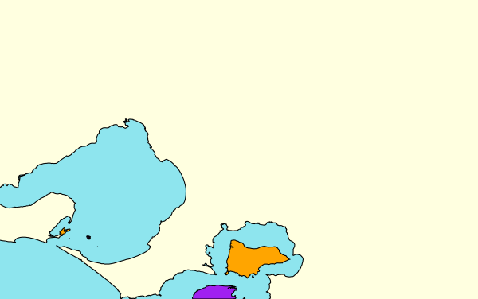
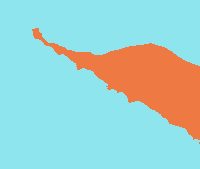

1 Introduction
It may often be desirable to separately colour two or more portions of a map that are separated by a line object. This is not directly possible because only polygons can be filled with colour, not lines. The osm_line2poly() function comes to the rescue here by converting a line to a polygon surrounding a given plotting region. The classic example where this arises is with coastlines. These are always represented in OpenStreetMap as line objects, preventing any ability to simply colour land and ocean separately.
This vignette illustrates the general principles of the osm_line2poly() function, along with several ancilliary issues such as plotting coastal islands. Although this functionality has been primarily developed with coastlines in mind, the osm_line2poly() function has been designed in a suffciiently general manner to be readily adaptible to any other cases where such line-to-polygon conversion may be desirable.
This vignette explores the example of the coastline around Greater Melbourne, Australia, first demonstrating how to extract coastline and convert it to land and sea polygons, and then demonstrating how these areas may be delinated on a plot.
2 Data Extraction and Conversion
We use osmdata to extract the coastline within the bounding box of Greater Melbourne.
library (osmplotr)
library (osmdata)
library (magrittr)
bbox <- osmdata::getbb ("greater melbourne, australia")
coast <- opq (bbox = bbox) %>%
add_osm_feature (key = "natural", value = "coastline") %>%
osmdata_sf (quiet = FALSE)This coastline object consists of several types of structure
## Object of class 'osmdata' with:
## $bbox : -38.49937,144.44405,-37.40175,146.1925
## $overpass_call : The call submitted to the overpass API
## $timestamp : [ Thurs 5 Oct 2017 10:23:18 ]
## $osm_points : 'sf' Simple Features Collection with 13635 points
## $osm_lines : 'sf' Simple Features Collection with 73 linestrings
## $osm_polygons : 'sf' Simple Features Collection with 12 polygons
## $osm_multilines : 'sf' Simple Features Collection with 0 multilinestrings
## $osm_multipolygons : 'sf' Simple Features Collection with 0 multipolygonsBecause OpenStreetMap represents coastline as line objects, all coastline data is contained within the $osm_lines object. The osm_line2poly() function can then converte these lines to polygons which can be used to plot filled areas.
## [1] "sea" "land" "islands"Note that reflecting its envisioned primary usage, the function always returns objects named "sea", "land", and "islands". For usages other than coastline, these names will of course reflect other kinds of object. The "islands" item contains any polygons which are separate to those originally queried. Each item of this list is an sf::data.frame object:
## [1] "sf" "data.frame"3 Plotting
The list items returned by osm_line2poly() may then be used to provide a map background which distinguishes ocean from land. Here we first colour the entire map using the background colour for the ocean, and overlay the land and island polygons on top of that.
map <- osm_basemap (bbox = bbox, bg = "cadetblue2") %>%
add_osm_objects (coast_poly$land, col = "lightyellow1") %>%
add_osm_objects (coast_poly$islands, col="orange") %>%
add_osm_objects (coast$osm_polygons, col="purple", border = "black") %>%
add_osm_objects (coast$osm_lines, col="black") %>%
print_osm_map ()
The gaudy colours differentiate the source of polygons. Purple islands were returned by the original osm query, while the orange ones were constructed from fragments by osm_line2poly.
Further Demonstrations
The osm_line2poly() function works by identifying lines which extend at at least two points beyond a given bounding box. For coastline, OpenStreetMap is designed so that land always lies to the left side in the direction of the line, enabling water and land to be systematically distinguished. The following test cases demonstrate the reliability of this distinction.
test_plot <- function (bbox)
{
dat <- opq (bbox) %>%
add_osm_feature (key = "natural", value = "coastline") %>%
osmdata_sf (quiet = FALSE)
coast <- osm_line2poly (dat$osm_lines, bbox)
osm_basemap (bbox = bbox) %>%
add_osm_objects(coast$sea, col = 'cadetblue2') %>%
add_osm_objects(coast$land, col = 'sienna2')
}Fetch the test data. A variable name with WE indicates that the coast enters the bounding box on the western side and exits on the east. The land is on the left when following that path.
bbWE <- get_bbox (c(142.116906, -38.352713, 142.205162, -38.409661))
coastWE <- getCoast(bbWE)
bbEW <- get_bbox(c(144.603127, -38.104003, 144.685557, -38.135596))
coastEW <- getCoast(bbEW)
bbNS <- get_bbox(c(143.807998, -39.770986, 143.906494, -39.918643))
coastNS <- getCoast(bbNS)
bbSN <- get_bbox(c(144.073544, -39.854586, 144.149318, -39.960047))
coastSN <- getCoast(bbSN)
bbWW <- get_bbox(c(144.904865, -37.858295, 144.923679, -37.874367))
coastWW <- getCoast(bbWW)
bbEE <- get_bbox(c(144.643383, -38.294671, 144.692197, -38.336022))
coastEE <- getCoast(bbEE)
bbNN <- get_bbox(c(145.856321, -38.831642, 146.050920, -38.914031))
coastNN <- getCoast(bbNN)
bbSS <- get_bbox(c(146.363768, -38.770345, 146.486389, -38.837287))
coastSS <- getCoast(bbSS)
bbEN <- get_bbox(c(144.738212, -38.337690, 144.758053, -38.346966))
coastEN <- getCoast(bbEN)
bbEWWS <- get_bbox(c(144.693077, -38.307526, 144.729113, -38.343997 ))
coastEWWS <- getCoast(bbEWWS)
bbWS <- get_bbox(c(143.164906 ,-38.704885, 143.2075563, -38.7462058 ))
coastWS <- getCoast(bbWS)


